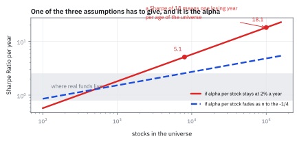
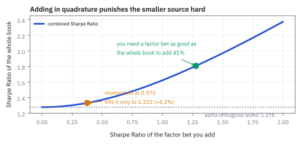

26.2 Alpha Spanned and Alpha Orthogonal
ผลตอบแทนคาดหวังของหุ้นแยกได้เป็นส่วนที่ factor อธิบายได้กับส่วนที่ตั้งฉากกับทุก factor ส่วนแรกคือเดิมพันครั้งเดียวบน factor ส่วนหลังคือเดิมพันหลายร้อยครั้งที่ความเสี่ยงหักล้างกันเอง
ทีมวิจัยเสนอสัญญาณสองตัว ตัวแรกบอกทิศของหุ้น 500 ตัว คาดผลตอบแทนเฉลี่ยตัวละ 2% ต่อปีโดยไม่มี exposure ต่อ factor ใดเลย หุ้นแต่ละตัวมีความผันผวนเฉพาะตัว 35% ต่อปี ตัวที่สองบอกว่า momentum factor จะให้ 3% ต่อปีที่ความผันผวน 8% ตัวที่สองดูดีกว่าทุกทาง ผลตอบแทนสูงกว่าและเสี่ยงน้อยกว่า ถ้าเลือกได้ตัวเดียว ควรเลือกตัวไหน?
ลองตอบก่อนเปิดเฉลย
ตัวแรก มันได้ Sharpe Ratio อย่างน้อย 1.278 ต่อปี ส่วนตัวที่สองได้ 0.375 ตัวแรกคือเดิมพัน 500 ครั้งที่ความเสี่ยงหักล้างกันเอง ตัวที่สองคือเดิมพันครั้งเดียวไม่ว่าจะซื้อหุ้นกี่ตัว ถ้าขยายเป็น 2,000 หุ้น ตัวแรกได้ 2.556 ตัวที่สองยัง 0.375 และถ้าเอาสองตัวมารวมกันอย่างดีที่สุดได้ 1.332 ดีกว่าตัวแรกคนเดียวแค่ 4.2%
สิ่งที่เราจะสร้าง
26.1 ตั้ง $\boldsymbol\alpha$ เป็นศูนย์ และจบที่พอร์ต $\mathbf u$ ที่ไม่มี exposure ต่อ factor ใดเลย หน้านี้ใส่ $\boldsymbol\alpha$ กลับเข้ามา แล้วใช้ projection แบบเดียวกับ OLS ของ 15.1 แยกมันเป็นสองส่วน ส่วนที่อยู่ใน range ของ $\mathbf B$ (7.5) เรียกว่า alpha spanned ส่วนที่ตั้งฉากกับทุกคอลัมน์เรียกว่า alpha orthogonal
เราจะแยก $\boldsymbol\alpha$ ของหุ้นสี่ตัวด้วยมือ ดูว่าทำไมส่วนแรกแยกไม่ออกจากผลตอบแทนของ factor สร้างพอร์ตจากส่วนที่สองแล้วหาขอบล่างของ Sharpe Ratio พิสูจน์ว่ามันโตตาม $\sqrt n$ ดันผลนี้ไปจนได้ตัวเลขที่เป็นไปไม่ได้เพื่อดูว่าข้อสมมติข้อไหนต้องยอม แล้วปิดด้วยการรวมสองชนิดเข้าด้วยกัน
ศัพท์ที่ใช้ในหัวข้อนี้
- Alpha
- ผลตอบแทนคาดหวังส่วนเกินที่ factor ไม่ได้ให้ เขียนเป็น vector ตัวละหุ้น $\boldsymbol\alpha$ เป็นสิ่งที่นักวิจัยสัญญาณพยายามหา
- Alpha spanned
- ส่วนของ $\boldsymbol\alpha$ ที่เขียนเป็นผลรวมถ่วงของคอลัมน์ $\mathbf B$ ได้ คือเดิมพันว่า factor จะให้ผลตอบแทนมากกว่าที่คิด ไม่ใช่การรู้เรื่องของหุ้นแต่ละตัว
- Alpha orthogonal
- ส่วนของ $\boldsymbol\alpha$ ที่ตั้งฉากกับทุกคอลัมน์ของ $\mathbf B$ เก็บได้ด้วยพอร์ตที่ไม่มี exposure ต่อ factor เลย ความเสี่ยงของพอร์ตนั้นจึงเป็นความเสี่ยงเฉพาะตัวล้วน
- Projection
- การหาจุดใน range ของ $\mathbf B$ ที่ใกล้ $\boldsymbol\alpha$ ที่สุด ส่วนที่เหลือตั้งฉากกับ range พอดี เป็นการคำนวณเดียวกับ OLS ที่ให้ $\boldsymbol\alpha$ เป็นตัวแปรตาม
- Breadth
- จำนวนเดิมพันที่เป็นอิสระกัน ยิ่งมาก ความเสี่ยงยิ่งหักล้างกัน และ Sharpe Ratio โตตามรากที่สองของมัน
- Smart beta
- ชื่อทางการตลาดของกองทุนที่ถือ factor ตามกติกาที่ประกาศไว้ ค่าธรรมเนียมต่ำ ใช้เป็นราคาตลาดของ alpha spanned
สัญลักษณ์และหน่วย
| สัญลักษณ์ | ความหมาย | หน่วย |
|---|---|---|
| $\boldsymbol\alpha,\ \boldsymbol\alpha_\parallel,\ \boldsymbol\alpha_\perp$ | alpha ของหุ้นทุกตัว ส่วน spanned และส่วน orthogonal | % ต่อปี |
| $\boldsymbol\lambda$ | น้ำหนักที่ทำให้คอลัมน์ของ $\mathbf B$ รวมเป็น $\boldsymbol\alpha_\parallel$ | % ต่อปีต่อ loading |
| $\mathbf B,\ \mathbf u$ | loadings matrix ของ 26.1 และทิศที่ $\mathbf B^{\mathsf T}\mathbf u=\mathbf 0$ | ไม่มีหน่วย |
| $\sigma_i,\ \sigma_{\max}$ | ความผันผวนเฉพาะตัวของหุ้น $i$ และค่าที่ใหญ่ที่สุด | % ต่อปี |
| $\mu$ | ค่าเฉลี่ยของ $\lvert[\boldsymbol\alpha_\perp]_i\rvert$ ต่อหุ้นหนึ่งตัว | % ต่อปี |
| $\lVert\mathbf x\rVert,\ \lVert\mathbf x\rVert_1$ | ความยาวแบบ Euclidean และผลรวมของขนาด (6.4) | ตามหน่วยของ $\mathbf x$ |
| $\text{SR}$ | Sharpe Ratio ผลตอบแทนคาดหวังหารด้วยความผันผวน | ต่อปี |
ขั้นที่ 1 — แยก $\boldsymbol\alpha$ ด้วย projection
ทุก vector ใน $n$ มิติเขียนเป็นส่วนที่อยู่ใน range ของ $\mathbf B$ บวกส่วนที่ตั้งฉากกับทุกคอลัมน์ได้แบบเดียว หาส่วนแรกด้วย normal equations ของ 15.1 โดยให้ $\boldsymbol\alpha$ เป็นตัวแปรตาม และคอลัมน์ของ $\mathbf B$ เป็นตัวแปรอธิบาย สองบรรทัดแรกคือนิยาม
บรรทัดที่สามได้จากการคูณบรรทัดแรกด้วย $\mathbf B^{\mathsf T}$ แล้วใช้บรรทัดที่สอง ก้อน $\boldsymbol\alpha_\perp$ จึงหายไป เหลือสมการที่แก้ $\boldsymbol\lambda$ ได้เมื่อคอลัมน์ของ $\mathbf B$ เป็นอิสระกัน คำตอบมีแบบเดียว เพราะถ้ามีสองแบบ ผลต่างของมันต้องอยู่ใน range ของ $\mathbf B$ และตั้งฉากกับ range พร้อมกัน ซึ่งมีแค่ vector ศูนย์
$\boldsymbol\lambda$ อ่านได้ว่า $\boldsymbol\alpha$ ก้อนนี้เดิมพันอะไร ตัวที่ $j$ คือผลตอบแทนเพิ่มที่ $\boldsymbol\alpha$ บอกเป็นนัยว่า factor $j$ จะให้ต่อ loading หนึ่งหน่วย
ขั้นที่ 2 — หุ้นสี่ตัว แยกด้วยมือ
โจทย์ให้อะไรมาบ้าง: $\mathbf B$ ของ 26.1 และ alpha สมมติ $\boldsymbol\alpha=(2.0, 0.5, 1.5, -0.5)\%$ ต่อปี 26.1 ขั้นที่ 10 พบว่าทิศเดียวที่ตั้งฉากกับทุกคอลัมน์คือ $\mathbf u=(1, -1, -0.8, 0.8)$ ส่วน orthogonal จึงเป็นเงาของ $\boldsymbol\alpha$ บนเส้น $\mathbf u$
คำตอบ: alpha 2.00% ของ A แยกเป็น 2.0305% ที่ factor อธิบายได้ กับ −0.0305% ที่เป็นของ A เอง แก้ $\boldsymbol\lambda$ จากแถว C และ D ที่ไม่มี tech: $\lambda_1+0.6\lambda_2=1.4756$ กับ $\lambda_1-1.4\lambda_2=-0.4756$ ลบกันได้ $2\lambda_2=1.9512$ จึงได้ $\lambda_2=0.9756$, $\lambda_1=0.8902$ และแถว A ให้ $\lambda_3=2.0305-0.8902-1.1707=-0.0305$ สัญญาณนี้แทบทั้งก้อนคือการเดิมพันว่า market จะให้เพิ่ม 0.89% และ momentum เพิ่ม 0.98% ต่อปี
ตรวจเองใน 10 วินาที: $\boldsymbol\alpha_\perp$ ต้องรวมกันได้ศูนย์เพราะตั้งฉากกับคอลัมน์ market $-0.0305+0.0305+0.0244-0.0244=0$ และแถว B ต้องได้ $0.8902-0.4(0.9756)-0.0305=0.4695$ ตรงกับ $\boldsymbol\alpha_\parallel$
ขั้นที่ 3 — ขนาดของสองส่วนบวกกันแบบ Pythagoras
สองส่วนตั้งฉากกัน เพราะ $\boldsymbol\alpha_\parallel^{\mathsf T}\boldsymbol\alpha_\perp=\boldsymbol\lambda^{\mathsf T}\mathbf B^{\mathsf T}\boldsymbol\alpha_\perp=0$ ความยาวกำลังสองจึงบวกกันได้ ตัวเลขนี้บอกว่า alpha ของสัญญาณเป็นชนิดไหนเท่าไร
ในโลกสี่หุ้นสาม factor เกือบทั้งหมดเป็น alpha spanned เพราะที่ว่างสำหรับส่วน orthogonal มีแค่ $n-m=1$ มิติ ที่หุ้น 500 ตัวกับ factor 60 ตัว ที่ว่างนั้นมี 440 มิติ และนั่นคือเหตุที่ขั้นที่ 7 มีพลังในโลกจริงแต่ไม่มีในตัวอย่างเล็กนี้
Figure 26.2a — alpha แยกเป็นสองส่วนที่ตั้งฉากกัน

ขั้นที่ 4 — ทำไม alpha spanned แยกไม่ออกจากผลตอบแทนของ factor
ใส่ $\boldsymbol\alpha=\mathbf B\boldsymbol\lambda+\boldsymbol\alpha_\perp$ กลับลงสมการของ 26.1 แล้วจัดกลุ่มใหม่ ดูว่าข้อมูลผลตอบแทนเห็นอะไร และพอร์ตต้องทำอะไรถึงจะเก็บส่วน spanned ได้
บรรทัดที่สองบอกว่าข้อมูลแยกไม่ออกระหว่าง “หุ้นมี alpha $\mathbf B\boldsymbol\lambda$” กับ “factor ให้ผลตอบแทนคาดหวังสูงขึ้น $\boldsymbol\lambda$” ทั้งสองแบบให้ผลตอบแทนหุ้นเหมือนกันทุกวัน จึงนิยมตั้ง $\boldsymbol\lambda=\mathbf 0$ แล้วนับส่วนนี้รวมเข้าไปในผลตอบแทนคาดหวังของ factor เหลือ $\boldsymbol\alpha_\perp$ เป็น alpha ตัวจริง
บรรทัดสุดท้ายบอกว่าพอร์ตเก็บ alpha spanned ได้ก็ต่อเมื่อ $\mathbf b\neq\mathbf 0$ จึงต้องแบก $\mathbf b^{\mathsf T}\boldsymbol\Omega_f\mathbf b$ ไปด้วย ความเสี่ยงนี้ไม่ลดไม่ว่าจะถือหุ้นกี่ตัว เพราะทุกหุ้นรับ factor ตัวเดียวกัน และเดิมพันแบบนี้ซื้อได้ถูกจากกองทุน smart beta
ขั้นที่ 5 — พอร์ตที่เก็บ alpha orthogonal
คราวนี้สร้างพอร์ตที่ชี้ไปทาง $\boldsymbol\alpha_\perp$ พอดี ปรับให้ยาวหนึ่งหน่วย แล้วหาผลตอบแทนคาดหวังกับ variance ของมัน เพราะ $\mathbf B^{\mathsf T}\mathbf w=\mathbf 0$ พอร์ตนี้ไม่มี exposure ต่อ factor เลย
ผลตอบแทนคาดหวังของพอร์ตมีสามก้อน ก้อน $\boldsymbol\alpha_\parallel$ กับก้อน factor หายเพราะ $\mathbf B^{\mathsf T}\mathbf w=\mathbf 0$ ก้อน $\boldsymbol\epsilon$ มีค่าเฉลี่ยศูนย์ เหลือ $\lVert\boldsymbol\alpha_\perp\rVert^2/\lVert\boldsymbol\alpha_\perp\rVert$ ผลตอบแทนคาดหวังจึงเท่ากับความยาวของ $\boldsymbol\alpha_\perp$ ไม่ใช่ค่าเฉลี่ยของมัน และความยาวโตเมื่อหุ้นมากขึ้น
variance เหลือแต่ส่วนเฉพาะตัว คือค่าเฉลี่ยถ่วงของ $\sigma_i^2$ ด้วยน้ำหนัก $[\boldsymbol\alpha_\perp]_i^2$ ค่าเฉลี่ยถ่วงไม่มีทางเกินตัวที่ใหญ่ที่สุด ขอบนี้หยาบ แต่พอสำหรับขอบล่างของ Sharpe Ratio ที่ต้องการ
ขั้นที่ 6 — ในโลกสี่หุ้น พอร์ตนี้ได้เท่าไร
โจทย์ให้อะไรมาบ้าง: $\boldsymbol\alpha_\perp$ ของขั้นที่ 2 และความผันผวนเฉพาะตัวรายปีของ A, B, C, D เป็น 30%, 34%, 28% และ 40% (สมมติ) พอร์ตคือ $\mathbf w=-\mathbf u/\sqrt{3.28}$ ซึ่งมี $w_i^2$ เป็น $(1, 1, 0.64, 0.64)/3.28$
คำตอบ: Sharpe Ratio แค่ 0.0017 ต่อปี แทบเป็นศูนย์ ขอบล่างของขั้นที่ 5 ให้ $0.0552/40=0.0014$ ต่ำกว่าค่าจริงนิดเดียว ในโลกที่หุ้นน้อยและ factor เกือบเท่าหุ้น alpha orthogonal แทบไม่มีที่อยู่
ตรวจเองใน 10 วินาที: $33.05\%$ ต้องอยู่ระหว่างความผันผวนต่ำสุด 28% กับสูงสุด 40% เพราะ variance เป็นค่าเฉลี่ยถ่วงของ $\sigma_i^2$
ขั้นที่ 7 — ความยาวโตตาม $\sqrt n$
ถ้าหุ้นมี $n$ ตัว และขนาดเฉลี่ยของ $[\boldsymbol\alpha_\perp]_i$ เท่ากับ $\mu$ ความยาวโตแค่ไหน? ใช้ Cauchy–Schwarz (6.5) กับ vector ของเครื่องหมาย $\mathbf s$ ที่ตัวละ $\pm1$ ซึ่งยาว $\sqrt n$ แล้วแทนลงขอบของขั้นที่ 5
นี่คือตัวเลขของ hook สัญญาณที่ทายหุ้นแต่ละตัวได้แค่ 2% ต่อปี ซึ่งเทียบกับความผันผวน 35% ของหุ้นตัวเดียวแล้วดูไร้ค่า กลับได้ Sharpe Ratio 1.278 เมื่อทำพร้อมกัน 500 ครั้ง ขอบนี้เป็นเท่ากับเมื่อทุกหุ้นมี $\lvert[\boldsymbol\alpha_\perp]_i\rvert$ และ $\sigma_i$ เท่ากัน
มองอีกแบบด้วยเงินหุ้นละเท่ากัน ผลตอบแทนคาดหวังรวมโตตาม $n$ เพราะทุกเดิมพันได้ $\mu$ แต่ความเสี่ยงรวมโตแค่ $\sqrt n$ เพราะส่วนเฉพาะตัวไม่สัมพันธ์กัน (3.1) อัตราส่วนจึงโตตาม $\sqrt n$ หุ้น 2,000 ตัวได้ 2.556 สี่เท่าของหุ้นได้สองเท่าของ Sharpe Ratio โดยฝีมือต่อหุ้นเท่าเดิม
Figure 26.2b — Sharpe Ratio ของสองสัญญาณเมื่อจำนวนหุ้นเพิ่ม

ขั้นที่ 8 — ดันผลนี้ไปจนสุด แล้วดูว่าอะไรต้องยอม
โจทย์ให้อะไรมาบ้าง: ขอบของขั้นที่ 7 ที่ $\mu=2\%$ และ $\sigma_{\max}=35\%$ ต่อปี ปล่อยให้ $n$ โตขึ้นเรื่อย ๆ แล้วถามว่าปีที่ขาดทุนเกิดบ่อยแค่ไหน ถ้าผลตอบแทนรายปีเป็น normal ปีที่ขาดทุนคือปีที่ผลตอบแทนต่ำกว่าค่าเฉลี่ยเกิน SR เท่าของความผันผวน
คำตอบ: Sharpe Ratio 18.07 แปลว่าปีที่ขาดทุนเกิดราวหนึ่งครั้งใน $3.7\times10^{72}$ ปี นานกว่าอายุเอกภพราว $1.4\times10^{10}$ ปีหลายเท่าจนไม่มีความหมาย ไม่มีกองทุนไหนใกล้ตัวเลขนี้ ข้อสมมติมีสามข้อ คือ model ถูก ความผันผวนเฉพาะตัวมีเพดาน และ $\mu$ ไม่ลดเมื่อ $n$ โต ข้อที่สองตรวจได้ในข้อมูล ข้อที่ต้องยอมคือข้อที่สาม alpha ต่อหุ้นต้องหดเมื่อจักรวาลใหญ่ขึ้น หุ้นตัวที่ 2,000 เล็กกว่า สภาพคล่องต่ำกว่า และทายยากกว่าตัวที่ 50 ถ้าจะให้ Sharpe Ratio ไม่โตไปเรื่อย ๆ $\mu$ ต้องหดเร็วอย่างน้อยเท่า $1/\sqrt n$
ตรวจเองใน 10 วินาที: จาก 500 ไป 2,000 คือสี่เท่า Sharpe Ratio ต้องสองเท่า $2(1.278)=2.556$ และจาก 2,000 ไป 8,000 ก็สองเท่าอีก ได้ 5.111
Figure 26.2c — เดินตามขอบล่างไปจนได้ตัวเลขที่เป็นไปไม่ได้

ขั้นที่ 9 — รวมสองชนิดเข้าด้วยกัน
กองทุนจริงมีทั้งสองอย่าง ถ้าสองกลยุทธ์ไม่สัมพันธ์กัน มี Sharpe Ratio $s_1$ กับ $s_2$ และแบ่งความเสี่ยงให้ $x_1$ กับ $x_2$ ผลตอบแทนคาดหวังคือ $x_1s_1+x_2s_2$ ส่วนความผันผวนคือ $\sqrt{x_1^2+x_2^2}$ ถามว่าแบ่งอย่างไรได้ Sharpe Ratio รวมสูงสุด
ตัวเศษคือผลคูณจุดของ $(x_1, x_2)$ กับ $(s_1, s_2)$ Cauchy–Schwarz บอกว่าไม่เกินความยาวคูณกัน หารด้วยความยาวของ $\mathbf x$ แล้วเหลือ $\sqrt{s_1^2+s_2^2}$ ได้เท่ากับขอบเมื่อแบ่งความเสี่ยงตามสัดส่วน Sharpe Ratio ($\mathbf x$ ขนานกับ $\mathbf s$)
momentum ได้ส่วนแบ่งของ $s^2$ แค่ $0.1406/1.7733=7.9\%$ จึงยก Sharpe Ratio รวมได้ 4.2% ทั้งที่ตัวมันเองได้ 0.375 การบวกแบบกำลังสองลงโทษแหล่งที่เล็กกว่าหนัก ต้องมี factor bet ที่ดีเท่า 1.278 ถึงจะเพิ่มได้ 41% ($\sqrt2-1$)
Figure 26.2d — การบวกแบบกำลังสองลงโทษแหล่งที่เล็กกว่า

คำถามที่ควรถามออกมาดัง ๆ
ถ้า alpha ส่วนใหญ่เป็น spanned สัญญาณนั้นไร้ค่าไหม? ไม่ มันคือเดิมพันบน factor ซึ่งอาจทำเงินได้จริง แต่ต้องตีราคาอีกแบบ ความเสี่ยงของมันไม่ลดเมื่อถือหุ้นมากขึ้น และมีคนขายเดิมพันแบบเดียวกันในราคาถูก การเก็บค่าธรรมเนียมแบบ alpha จากของแบบนี้คือการขายของที่ลูกค้าซื้อเองได้ถูกกว่า
หุ้นเป็นพันตัว หา $\boldsymbol\alpha_\perp$ อย่างไร? ทำ regression ของ $\boldsymbol\alpha$ บนคอลัมน์ของ $\mathbf B$ ข้ามหุ้นในวันเดียว แล้วเก็บ residual ไว้ สูตรเหมือนขั้นที่ 1 ทุกตัว 26.5 แสดงว่าทำเป็นขั้น ๆ ได้โดยไม่เสียความแม่น และ 27.1 ใช้ regression แบบเดียวกันหา factor return
ความผิดที่ทำให้ตีราคาสัญญาณผิด
รายงาน alpha โดยไม่ฉายก่อน: สัญญาณในขั้นที่ 2 มี alpha ยาว 2.598 แต่ 99.95% ของความยาวกำลังสองคือเดิมพันบน market กับ momentum ถ้าไม่ฉาย จะเรียกเดิมพัน factor ว่าฝีมือเลือกหุ้น และตั้งค่าธรรมเนียมผิดราคา
อ่าน $\sqrt n$ ว่าเป็นของฟรี: ขั้นที่ 8 แสดงว่าถ้า $\mu$ คงที่ หุ้นแสนตัวให้ Sharpe Ratio 18.07 ซึ่งเป็นไปไม่ได้ สิ่งที่สูตรไม่รวมคือต้นทุนการเทรด สภาพคล่อง และความจริงที่ว่าหุ้นที่เพิ่มเข้ามาทายยากกว่า สูตรนี้เป็นเพดาน ไม่ใช่คำสัญญา
ลืมว่าการแยกขึ้นกับ $\mathbf B$: ถ้าใช้ model ที่มีแค่ market กับ momentum กับ alpha ชุดเดิม $\boldsymbol\alpha_\perp$ ยาว 0.0619 แทน 0.0552 คือยาวขึ้น 12% เพราะส่วนที่เคยเป็นเดิมพัน tech กลายเป็น “alpha” สัญญาณที่ตั้งฉากกับ model ของผู้ให้บริการเจ้าหนึ่งอาจเป็น spanned บางส่วนใน model ของอีกเจ้า
ใช้ทำอะไรบนโต๊ะจริง
ก่อนรับสัญญาณใหม่เข้าระบบ ทีมวิจัยฉายมันลงบน $\mathbf B$ ของ risk model ที่ใช้อยู่ แล้วรายงาน $\boldsymbol\lambda$ กับสัดส่วนของ $\boldsymbol\alpha_\perp$ ส่วน spanned ถูกตีราคาเทียบกับกองทุน factor ส่วน orthogonal ถูกวัดด้วย Sharpe Ratio หลังหัก factor และขนาดของจักรวาลหุ้นที่มันใช้ได้ คือ $\sqrt n$ ของขั้นที่ 7 ที่หักต้นทุนแล้ว
สามโจทย์ตรวจความเข้าใจ
1. สัญญาณคู่หนึ่งบอกว่า A จะชนะ B ปีละ 1% คือ $\boldsymbol\alpha=(0.5, -0.5, 0, 0)\%$ ส่วนไหนเป็นฝีมือเลือกหุ้นจริง และส่วนที่เหลือเดิมพันอะไร
เฉลย
$\boldsymbol\alpha^{\mathsf T}\mathbf u=0.5+0.5=1$ จึงได้ $\boldsymbol\alpha_\perp=\mathbf u/3.28=(0.3049, -0.3049, -0.2439, 0.2439)$ ความยาวกำลังสอง $1/3.28=0.3049$ จาก $\lVert\boldsymbol\alpha\rVert^2=0.5$ คือ 61.0% เป็นฝีมือจริง ที่เหลือ $\boldsymbol\alpha_\parallel=(0.1951, -0.1951, 0.2439, -0.2439)$ ให้ $\lambda_2=0.2439$, $\lambda_1=0.0976$, $\lambda_3=-0.1951$ ถ้าถือคู่ซื้อ A ขาย B อย่างละ \$1 ล้าน exposure คือ (0, 1.6, 0) ผลตอบแทนคาดหวัง 1% จึงแยกเป็น $1.6(0.2439)=0.39\%$ ที่เป็นเดิมพัน momentum เพราะ A มี momentum สูงกว่า B มาก และ $0.3049+0.3049=0.61\%$ ที่เป็นฝีมือจริง
2. ถ้า alpha orthogonal เฉลี่ยหุ้นละ 1% ต่อปี และความผันผวนเฉพาะตัวไม่เกิน 30% ต้องมีหุ้นอย่างน้อยกี่ตัวขอบล่างถึงจะรับประกัน Sharpe Ratio 2
เฉลย
ต้องการ $\sqrt n(0.01)/0.30\ge2$ คือ $\sqrt n\ge60$ จึง $n\ge3{,}600$ ตัว และนั่นยังสมมติว่าหุ้นตัวที่ 3,600 ทายได้ดีเท่าตัวแรก ซึ่งขั้นที่ 8 บอกว่าไม่น่าเป็นจริง
3. กองทุนมี alpha orthogonal ที่ Sharpe Ratio 1.2 เพิ่ม factor bet ที่ไม่สัมพันธ์กันและมี Sharpe Ratio 0.5 ได้เท่าไร และต้องมี factor bet ดีแค่ไหนถึงจะถึง 1.5
เฉลย
$\sqrt{1.44+0.25}=\sqrt{1.69}=1.3$ เพิ่มขึ้น 8.3% ถ้าต้องการ 1.5 ต้องมี $s_2=\sqrt{2.25-1.44}=\sqrt{0.81}=0.9$ เกือบสองเท่าของ factor bet ตัวแรก
คำนวณซ้ำด้วย JavaScript
รันใน Node.js ได้โดยไม่ต้องติดตั้งอะไร โค้ดฉาย $\boldsymbol\alpha$ ลงบนคอลัมน์ของ $\mathbf B$ ด้วย normal equations สร้างพอร์ต alpha orthogonal หาขอบล่างของ Sharpe Ratio ตาม $n$ โอกาสของปีที่ขาดทุนจาก series ของหาง normal และการรวมสองกลยุทธ์ ตรวจว่า matrix เป็นสี่เหลี่ยม คอลัมน์ของ $\mathbf B$ เป็นอิสระกัน ความผันผวนเป็นบวก และ series ใช้เฉพาะไกลในหาง
const {sqrt, abs, exp, PI, hypot} = Math;
function checkMatrix(A, name) {
if (!Array.isArray(A) || A.length === 0 || !A.every(row => Array.isArray(row) && row.length === A[0].length && row.every(Number.isFinite))) {
throw new TypeError(name + ' must be a non-empty rectangular matrix of finite numbers');
}
return [A.length, A[0].length];
}
const dot = (a, b) => a.reduce((s, v, i) => s + v * b[i], 0);
const transpose = A => A[0].map((_, j) => A.map(row => row[j]));
// Solve G x = y by Gaussian elimination; a (near) singular G means the columns of B are not independent.
function solve(G, y) {
const n = G.length, M = G.map((row, i) => [...row, y[i]]);
for (let c = 0; c < n; c++) {
let p = c;
for (let i = c + 1; i < n; i++) if (abs(M[i][c]) > abs(M[p][c])) p = i;
if (abs(M[p][c]) < 1e-12) throw new RangeError('Columns of B are not independent: lambda is not unique');
[M[c], M[p]] = [M[p], M[c]];
for (let i = c + 1; i < n; i++) {
const g = M[i][c] / M[c][c];
for (let j = c; j <= n; j++) M[i][j] -= g * M[c][j];
}
}
const x = new Array(n).fill(0);
for (let i = n - 1; i >= 0; i--) x[i] = (M[i][n] - M[i].slice(i + 1, n).reduce((s, v, k) => s + v * x[i + 1 + k], 0)) / M[i][i];
return x;
}
// Split alpha into B lambda (spanned) and the part orthogonal to every column of B.
function splitAlpha(B, alpha) {
const [n] = checkMatrix(B, 'Loadings B');
if (!Array.isArray(alpha) || alpha.length !== n || !alpha.every(Number.isFinite)) throw new TypeError('Alpha must hold one finite number per stock');
const Bt = transpose(B);
const lambda = solve(Bt.map(ci => Bt.map(cj => dot(ci, cj))), Bt.map(ci => dot(ci, alpha)));
const spanned = B.map(row => dot(row, lambda));
const orthogonal = alpha.map((a, i) => a - spanned[i]);
return {lambda, spanned, orthogonal, check: Bt.map(ci => dot(ci, orthogonal)),
norm: sqrt(dot(alpha, alpha)), normSpanned: sqrt(dot(spanned, spanned)), normOrthogonal: sqrt(dot(orthogonal, orthogonal))};
}
// Portfolio w = alpha_perp / |alpha_perp| with a diagonal idiosyncratic covariance.
function orthogonalBet(alphaPerp, idioVols) {
if (!Array.isArray(idioVols) || idioVols.length !== alphaPerp.length || !idioVols.every(s => Number.isFinite(s) && s > 0)) {
throw new RangeError('Need one positive idiosyncratic volatility per stock');
}
const len = sqrt(dot(alphaPerp, alphaPerp));
if (!(len > 0)) throw new RangeError('Orthogonal alpha is zero: nothing to bet on');
const w = alphaPerp.map(a => a / len);
const expected = dot(w, alphaPerp), vol = sqrt(w.reduce((s, x, i) => s + x * x * idioVols[i] ** 2, 0));
return {w, expected, vol, sharpe: expected / vol, bound: len / Math.max(...idioVols)};
}
// Lower bound on the Sharpe Ratio when the average |alpha_perp| per stock is mu and no idio vol exceeds sigmaMax.
function sharpeBound(n, mu, sigmaMax) {
if (!Number.isInteger(n) || n < 1) throw new RangeError('n must be a whole number of stocks');
if (!(mu >= 0) || !(sigmaMax > 0)) throw new RangeError('Need mu >= 0 and a positive volatility cap');
return sqrt(n) * mu / sigmaMax;
}
// Upper Normal tail by its asymptotic series (accurate far out, x above 5).
function upperTail(x) {
if (!(x > 5)) throw new RangeError('The series is used only far in the tail (x above 5)');
const phi = exp(-x * x / 2) / sqrt(2 * PI), q = 1 / (x * x);
return phi / x * (1 - q + 3 * q * q - 15 * q ** 3 + 105 * q ** 4);
}
// Best Sharpe of two uncorrelated strategies: risk budget in proportion to their Sharpe Ratios.
function combine(s1, s2) {
if (![s1, s2].every(Number.isFinite)) throw new TypeError('Sharpe Ratios must be finite');
return {sharpe: hypot(s1, s2), share2: s2 * s2 / (s1 * s1 + s2 * s2)};
}
const B = [[1, 1.2, 1], [1, -0.4, 1], [1, 0.6, 0], [1, -1.4, 0]];
const alpha = [2.0, 0.5, 1.5, -0.5];
const split = splitAlpha(B, alpha);
const bet = orthogonalBet(split.orthogonal, [30, 34, 28, 40]);
const table = [100, 500, 2000, 8000, 100000].map(n => sharpeBound(n, 0.02, 0.35));
const both = combine(table[1], 0.03 / 0.08);
const twoFactor = splitAlpha(B.map(row => [row[0], row[1]]), alpha);
const ex1 = splitAlpha(B, [0.5, -0.5, 0, 0]);
console.log(JSON.stringify({
split: {...split, spannedShare: split.normSpanned ** 2 / split.norm ** 2},
bet: {expected: bet.expected, vol: bet.vol, sharpe: bet.sharpe, bound: bet.bound},
table, lossYear: upperTail(table[4]), momentum: 0.03 / 0.08,
both: {...both, gain: both.sharpe / table[1] - 1, doubled: combine(table[1], table[1]).sharpe / table[1] - 1},
twoFactor: {orthogonal: twoFactor.orthogonal, normOrthogonal: twoFactor.normOrthogonal, ratio: twoFactor.normOrthogonal / split.normOrthogonal},
exercise1: {orthogonal: ex1.orthogonal, lambda: ex1.lambda, orthShare: ex1.normOrthogonal ** 2 / ex1.norm ** 2},
exercise2: (2 * 0.30 / 0.01) ** 2, exercise3: {sharpe: combine(1.2, 0.5).sharpe, needed: sqrt(1.5 ** 2 - 1.2 ** 2)}
}));ข้อจำกัด: alpha สองชนิดต่างกันอย่างไรในทางปฏิบัติ
| เรื่อง | alpha spanned | alpha orthogonal | ผลเวลาใช้งาน |
|---|---|---|---|
| เมื่อจักรวาลหุ้นใหญ่ขึ้น | Sharpe Ratio เท่าเดิม | โตตาม $\sqrt n$ ถ้า $\mu$ ไม่หด | ขยายจักรวาลคุ้มเฉพาะกับชนิดหลัง และในโลกจริง $\mu$ หด |
| ความเสี่ยงที่ติดมา | ความเสี่ยงจาก factor ที่ไม่ลด | ความเสี่ยงเฉพาะตัวที่หักล้างกันได้ | ต้องคุม exposure ของชนิดแรกด้วยเพดาน |
| ราคาในตลาด | ซื้อได้ถูกจากกองทุน factor | ซื้อจากที่อื่นไม่ได้ | ค่าธรรมเนียมที่เรียกได้ต่างกันหลายเท่า |
| การแยก | ขึ้นกับ $\mathbf B$ ที่ใช้ เปลี่ยน model แล้วสัดส่วนเปลี่ยน | ตรวจกับมากกว่าหนึ่ง model | |
สิ่งที่ควรตอบได้หลังอ่าน
- $\boldsymbol\alpha=\mathbf B\boldsymbol\lambda+\boldsymbol\alpha_\perp$ แยกได้แบบเดียวด้วย $\boldsymbol\lambda=(\mathbf B^{\mathsf T}\mathbf B)^{-1}\mathbf B^{\mathsf T}\boldsymbol\alpha$ และความยาวกำลังสองของสองส่วนบวกกันได้
- alpha spanned แยกไม่ออกจากผลตอบแทนคาดหวังของ factor เก็บได้ด้วย exposure ต่อ factor เท่านั้น ในตัวอย่างสี่หุ้นมันคือ 99.95% ของความยาวกำลังสอง
- พอร์ต $\boldsymbol\alpha_\perp/\lVert\boldsymbol\alpha_\perp\rVert$ ไม่มี exposure ต่อ factor ได้ผลตอบแทนคาดหวังเท่ากับความยาว และ $\text{SR}\ge\sqrt n\,\mu/\sigma_{\max}$ คือ 1.278 ที่ 500 หุ้น 2% และ 35%
- ถ้า $\mu$ คงที่ หุ้นแสนตัวให้ 18.07 ซึ่งเป็นไปไม่ได้ ข้อสรุปคือ alpha ต่อหุ้นต้องหดเมื่อจักรวาลใหญ่ขึ้น
- สองกลยุทธ์ที่ไม่สัมพันธ์กันรวมได้ $\sqrt{s_1^2+s_2^2}$ เมื่อแบ่งความเสี่ยงตาม Sharpe Ratio momentum 0.375 ยก 1.278 ได้แค่ 4.2%
การแยกทั้งหมดนี้ขึ้นกับคอลัมน์ของ $\mathbf B$ แต่คอลัมน์ชุดเดียวกันเขียนได้หลายแบบ 26.3 แสดงว่าเปลี่ยน $\mathbf B$ ได้อย่างไรโดยที่ผลตอบแทนและความเสี่ยงรวมไม่ขยับ และอะไรที่ขยับ